Chapter 6 — The Pool
The "Spring into Security" banner went live at ten o'clock on a Tuesday, and for twenty glorious minutes it worked as promised: sign-ups tripled. Lena stood at the back of the exec room watching the only graph Atrium had — the load balancer's traffic line, climbing like a good quarterly slide.
At 10:31, Cortexa — the third-party CVE-enrichment vendor that Atrium called synchronously inside every report submission — began answering in thirty seconds instead of three hundred milliseconds. Their status page would later say elevated latency in one region. Glasshouse's status page said nothing, because at 10:43 Glasshouse stopped saying anything at all.
The whole site 503'd. Not the submission form — everything. Login. The leaderboard. The static marketing page the promo pointed at, served through the same app. The brick screamed on the desk of whoever held it that week, and Idris appeared at Maya's shoulder, already having checked the obvious things.
"CPU?" Maya asked.
"Six percent." He turned his laptop around: six healthy-looking pods, idling. "Memory's fine. Disk's fine. Postgres is bored. The site is down and every machine involved is having a restful morning."
In the war room, an exec said the sentence execs say: "Can we add more pods?" Idris added more pods — six became twelve became eighteen — and the traffic graph didn't move. The new pods came up green, accepted connections, and went exactly as silent as the old ones.
"We just bought more chairs," Idris said, "in front of the same locked door."
Lena was on the bridge, watching launch conversions flatline in a window two executives could also see. "Someone tell me what the door is."
⏸ Your call. Idle CPUs, eighteen green pods, a site answering 503 — before the thread dump: name the exhausted resource, what's holding it, and which -ility is failing. Commit.
The investigation
Eight years of production Java at Meridian Freight said: find the exhausted resource, because something always is. CPU, memory, and database connections all checked out, so Maya went looking for the resource nobody graphs.
She picked a pod and took a thread dump.
"http-nio-8080-exec-117" #341 daemon prio=5 RUNNABLE
java.lang.Thread.State: RUNNABLE
at sun.nio.ch.SocketDispatcher.read0(java.base/Native Method)
at sun.nio.ch.NioSocketImpl.read(java.base)
...
at org.springframework.web.client.DefaultRestClient$DefaultResponseSpec.body
at com.glasshouse.atrium.enrichment.EnrichmentService.enrich
at com.glasshouse.atrium.report.ReportSubmissionService.submit
She grepped the dump. One hundred and ninety-six threads named http-nio-8080-exec-*, all in the same native socket read, all waiting on api.cortexa.io. Not crashed, not erroring. The JVM reports a thread blocked in a native read as RUNNABLE — its idea of a joke. Four workers were doing actual work. The rest were parked, each holding open a request the load balancer had long since abandoned.
(If you called the worker pool: right resource, right -ility — availability. Hold your fix; the napkin math is about to price it.)
She pulled up the code she'd walked past a dozen times without seeing:
@Service
public class EnrichmentService {
// Built ad hoc years ago. No timeouts configured anywhere.
private final RestClient cortexa = RestClient.create("https://api.cortexa.io");
public CveEnrichment enrich(SubmittedReport report) {
// Called synchronously from ReportSubmissionService.submit(...)
return cortexa.post()
.uri("/v1/enrich")
.body(EnrichmentRequest.from(report))
.retrieve()
.body(CveEnrichment.class); // parks this Tomcat worker as long as Cortexa pleases
}
}
A read blocks until it returns — that's just the network, she thought — the Meridian reflex, eight years of raw sockets behind a hand-configured Jetty where a blocking read had never once cost more than its own wait. The model itself held no surprises. In Tomcat's default model, exactly as in the Jetty pool she had sized by hand, the thread is the request: one worker carries it from connector to filter chain to controller to this socket read and back. While Cortexa held the socket, that worker could do nothing else, and everything it carried waited with it. She had never set a timeout at Meridian either — no library had set one on her behalf, and the freight traffic had never made her pay for the omission. The habit hadn't been wrong back then; it had been unpriced. This morning, Cortexa sent the invoice.
On the bridge, Idris was explaining why the site hung instead of failing fast. "Tomcat's NIO connector keeps accepting sockets after the workers are gone — up to max-connections, eight thousand-odd by default. They sit with the poller, queued for a worker that's never coming back. Past that there's accept-count, a backlog of about a hundred. Past that, connection refused. And the probes and ingress health checks are HTTP requests too — they queue behind the same dead pool, time out, the pod drops from the Service, and the front door answers 503: no healthy upstream. Eighteen pods, declared dead for telling the truth too slowly."
Elias had been silent in the corner of the war room. Now he spoke, mostly to the exec.
"The server didn't run out of CPU. It ran out of patience tokens. It has two hundred of them per pod, every request borrows one for its whole lifetime, and a vendor in another region is holding a hundred and ninety-six of them hostage — per pod. Maya. Show them the math."
What the senior sees
Maya took a napkin — the Wall was three rooms away and the bridge was waiting.
"Little's law, informally: requests in flight equals arrival rate times how long each one takes. Each pod is taking about seven submissions a second right now — that's the promo working. Normally a submission takes three hundred milliseconds, so seven times zero point three is about two threads busy per pod. Trivial.
"Cortexa goes to thirty seconds. Same arrivals, hundred-times duration: seven times thirty is two hundred and ten concurrent — and the pool is two hundred. server.tomcat.threads.max, the default, untouched since this repo was created. The submission endpoint alone now demands more than the whole pool, so it absorbs all of it, and login and the leaderboard starve behind it. One slow downstream doesn't slow down one feature. In thread-per-request, it confiscates the threads every feature shares."
"And the pods?" the exec asked. "Eighteen is triple the capacity."
"It would be, if arrival rate were a constant. It isn't — it's a crowd. Every user staring at a spinner hits refresh, the load balancer re-sends what timed out, and demand climbs to meet whatever capacity we add. And every new pod opens hundreds more concurrent calls into a vendor that's already drowning — we're making Cortexa slower by scaling at it."
One mercy was January's: the eighteen pods had at least come up interchangeable. The whiteboard-bolted-to-the-kitchen-wall bug — the singleton stashing a draft on a field every thread shared — was the kind of state that breaks scale-out, because identical pods stop being identical. Statelessness buys the right to scale out. The pool is just the next bottleneck up.
She drew the connector where it sat on the Request Journey — left of everything they'd traced on the Wall in March, when the team had walked one HTTP request from socket to database and back. Socket → connector → filter chain → DispatcherServlet → onward. Nothing on March's line was failing: the filters were idle and the DispatcherServlet barely entered, because a request only reaches them on a worker thread, and no workers were free. The outage lived in the Journey's first box, drawn as a single word and never opened. "Everything we traced last month happens on a worker thread. The connector is the toll booth where the thread gets assigned, and we've never once looked at it, because Boot embedded it and it worked."
She sketched the rest on a second napkin — transcribed that evening onto the Wall, under the Journey's far-left box:

Under it, the law in one line: in-flight = arrival rate × residence time.
"Run it backwards," Elias said from the doorway.
Maya flipped the napkin. "Pool fixed at two hundred, residence thirty seconds — two hundred divided by thirty. Six point six requests a second. Per pod. For everything."
"That's the postmortem's first line. Availability stopped being a feeling this morning; it's division. And division forces a design question: how much of the pool may one dependency hold? Today, all of it. A bulkhead — a small pool per dependency — makes that a number somebody chose. Size it stingy and it rejects honest traffic; the number is a negotiation. Blast radius is a design property. We never designed ours."
The server inside the app — at Meridian she had built that by hand, an embedded Jetty wired line by line in main(), so Boot's fat jar — java -jar and the server comes up with the code — was the one part of Spring she had trusted from day one. Atrium's pom.xml even had a <packaging>war</packaging> profile from the years when it deployed into a standalone Tomcat — the old order, where the server owned the app instead of the app carrying its server. It had been dead since the move to Kubernetes, kept around like an appendix.
Someone on the bridge asked the perennial question: "Is Tomcat the problem? I've read Jetty is faster."
Elias looked at Maya. She shook her head. "Swapping is one starter exclusion — drop spring-boot-starter-tomcat, add spring-boot-starter-jetty; Boot's ServletWebServerFactory auto-configuration wires whichever container is on the classpath. Undertow used to be the third door — off the menu as of Boot 4.0; it never caught up to the Servlet baseline. And it would change nothing: the servlet model is the model — one thread per in-flight request, bounded pool. We'd be renaming the pool, not draining it. The problem isn't the brand of container. It's that we let a thirty-second stranger borrow our threads with no return date."
"There is a structural answer," Elias added quietly. "The JVM grew threads that stop being precious — cheap enough that blocking one is nearly free. That conversation is worth having. Not at" — he checked his watch — "eleven twenty, mid-incident, in front of finance." He wrote virtual threads — later in the napkin's corner; that corner would wait until November.
Two seconds or thirty
Mitigation came first: Idris flipped Cortexa enrichment off behind a config property, the parked threads drained as their socket reads finally returned, and the site came back in ninety seconds. The exec left. Then came the argument about what normal should be.
Maya proposed timeouts: one second to connect, two seconds to read, on every outbound call Atrium made — starting with Cortexa.
Lena pushed back hard, and she wasn't wrong to. "Researchers wait for those scores — enrichment is half of why submission feels smart. So if Cortexa has a slow afternoon, we just... fail it?"
"Today Cortexa had a slow afternoon and we failed everything — login, leaderboard, your launch. The trade-off isn't enrichment-works versus enrichment-fails; it's one feature degrading honestly versus the whole site degrading dishonestly. A timeout is us deciding in advance how much of our capacity a vendor may hold."
"Then don't make the researcher wait at all," Lena said — and that, everyone agreed afterward, was the actual fix. If enrichment could fail without failing the submission, it shouldn't be inside the submission. Accept the report, commit it, return 201, and enrich afterward — the score appears when it appears.
Lena lost the argument she'd started and won the one that mattered — which, Maya was learning, is what a good trade-off discussion looks like.
The fix
The timeouts went in as policy, not as a patch. As of Boot 4.0, the spring.http.clients.* properties set connect and read timeouts for every client built through Boot's auto-configured RestClient.Builder — a global floor, committed to application.yml before any named client got its own numbers:
spring:
http:
clients:
connect-timeout: 2s # the global floor — a forgotten client may be slow,
read-timeout: 5s # never unbounded; named clients override stricter
The Cortexa client then chose stricter numbers, with a name attached:
@Configuration
class CortexaClientConfig {
@Bean
RestClient cortexaClient(RestClient.Builder builder) {
var settings = ClientHttpRequestFactorySettings.defaults()
.withConnectTimeout(Duration.ofSeconds(1))
.withReadTimeout(Duration.ofSeconds(2));
return builder
.baseUrl("https://api.cortexa.io")
.requestFactory(ClientHttpRequestFactoryBuilder.detect().build(settings))
.build();
}
}
The numbers had a derivation, because Elias asked for one. "Where does two seconds come from?"
"The submission route promises four seconds at p99," Maya said. "Our own work — Postgres, serialization, the filter chain — spends about a second and a half. What's left is what guests may borrow. Two seconds is Cortexa's share of a budget, not a mood."
"Then the budget goes next to the route," Elias said. "Budgets nobody can see get spent twice. And when Lena wants the timeout raised — she will — that's not a config change, that's a product negotiation over who gets the missing second." The Request Journey, it turned out, was also a ledger — every hop spending from the same four seconds.
By evening the ledger entry sat where reviewers would trip over it, two comment lines above the mapping — the convention ADR-006 would make house style:
// Route budget (ADR-006): POST /api/v2/reports promises p99 4s
// = ours 1.5s + Cortexa 2s + headroom 0.5s — raising a share is a product call
@PostMapping(version = "2")
ResponseEntity<ReportCreatedResponse> submit(
@Valid @RequestBody SubmitReportRequest request) { /* ... */ }
The enrichment call moved out of the request path. submit() now persisted the report and recorded enrichment as pending. A background worker on a small, bounded, named executor called Cortexa afterward and filled in the score. A two-second timeout on a deferred call costs a retry. A missing timeout on an inline call had cost a launch.
Then the connector itself, configured deliberately for the first time in seven years — mostly the same numbers, but now decisions instead of dust:
server:
shutdown: graceful # the default since Boot 3.4 — pinned explicitly
http2:
enabled: true # multiplexes streams; NOT more workers
tomcat:
threads:
max: 200 # the pool: hard ceiling on concurrent requests
min-spare: 10
max-connections: 8192 # sockets the NIO poller will hold open
accept-count: 100 # backlog once max-connections is full
connection-timeout: 5s # slow/idle clients can't squat on a connection
spring:
lifecycle:
timeout-per-shutdown-phase: 30s # the drain window: how long "finish" gets
Graceful shutdown hadn't needed enabling — Boot's default since 3.4 — yet the mid-incident rolling restarts had still killed in-flight requests, an error spike on top of the outage. Graceful only waits out the drain window before abandoning what's left. Threads parked thirty seconds on Cortexa outlived it. The genuinely new decision was that window, timeout-per-shutdown-phase, now a number somebody owned. SIGTERM still meant stop accepting, finish what you hold, then die. Idris scheduled a drill against the cluster's preStop hooks, because he does not believe YAML until he has watched it. HTTP/2 got a one-line caveat in the commit message: multiplexing reduces connection pressure, not thread pressure — every request still borrows a worker.
"Deploys are availability events," Idris said, taping the drill date to the Wall. "One real outage a year, forty deploys a quarter — get the drain window wrong and the deploys are the outage, sliced thin." The runbook gained one line in Maya's hand: the drain window must outlive your slowest in-flight request, or graceful is a longer word for kill.
The deploys got faster too. Every image build had been shipping the 200-megabyte fat jar as one Docker layer. The Dockerfile now ran java -Djarmode=tools -jar atrium.jar extract --layers --launcher, splitting dependencies, loader, and application code into separate layers — a one-line change shipped kilobytes instead of the world, and mid-incident that difference is minutes.
Maya wrote the decision note that afternoon, three sentences long: Every outbound call gets a timeout. Every timeout gets a named owner who chose the number. Someday this call gets a circuit breaker — a timeout decides how long one request waits; something still needs to decide when to stop sending requests at all. That last sentence was a promissory note that came due in September. By the time it reached the binder, the note had grown a number:
ADR-006 — The latency budget. Context: One slow vendor consumed every worker thread in a bounded pool; the whole site 503'd with CPUs idle. Decision: Every outbound call carries an explicit timeout derived from a per-endpoint latency budget; budgets sum along the Request Journey and are recorded next to the route; no unbounded waits anywhere, with
spring.http.clients.*as the global floor. Consequences: Slow dependencies now fail fast and partially instead of globally, and degraded modes become explicit product negotiations — the Lena conversation, institutionalized: every new dependency starts with an argument about its share of the budget.
⚖ Your move, architect
Rewind to 11:20 — site down, finance in the room, the mitigation flag not yet found. The capacity question had three honest answers; commit to one before reading on:
- A — Raise
threads.maxand keep adding pods. No code change, visible action, the exec is already nodding. - B — Queue-and-async the vendor call. Enrichment never belonged in the request path; accept, commit, return 201, enrich later.
- C — Timeouts plus a per-dependency bulkhead, now. Cap how long any request may wait on Cortexa and how many may wait at once; config and one small bean.
The trade-offs, since you've committed: A spends cost to buy minutes, not availability. Eight hundred threads at 30 s residence are just eight hundred parked threads; retries raise the arrival rate to meet whatever capacity you add; and every new pod ships its own Hikari pool, opening fresh connections against a Postgres that had no part in this outage (that bill arrives in Chapter 9). B is the right shape long-term — Chapter 13 builds it properly, with a durable queue, retries, and idempotency — but mid-incident it spends operability exactly when the team has none to spare: a redesign wearing a fix's clothes. The deferred worker shipped that week was a first step toward B, affordable once C had made failure cheap. C is what the team chose: it buys availability by capping blast radius at the slow dependency, so Cortexa's worst afternoon now costs an enrichment outage, not a site outage. The price is hard conversations with Lena about what "degraded" shows users — and that conversation is a feature, not a tax. C is a bridge, not an end-state: the structural answer to the economics of blocking a thread arrives in November as ADR-015's virtual threads — this fork buys the quarter, not the architecture.
Two other things happened quietly. A backlog ticket appeared, titled "Real application metrics — we graphed the LB because we had nothing else," filed with no sprint attached, where it began to age. And Maya walked over to Idris's desk and put her name on the on-call rotation.
"You sure?" he said. "The brick doesn't care what you were doing at three a.m."
"I stood in a war room today and the only person with evidence was me. I'd rather be the person with evidence."
Idris considered the thread dump still open on her laptop — the first time, he told Elias later, a developer had brought him evidence instead of vibes — and slid the rotation spreadsheet across.
The debrief — Ch.6, The Pool
How does the thread-per-request model work, and how does one slow downstream take a whole Spring Boot service offline? Claim: Boot's default embedded Tomcat is thread-per-request — a bounded worker pool (200 by default) where each request occupies one thread for its entire lifetime, so the pool, not CPU, is the real concurrency ceiling. Mechanism: The NIO connector accepts sockets (up to
max-connections, with anaccept-countbacklog behind that) and hands each ready request to a worker; every blocking operation in the handler — JDBC, a synchronousRestClientcall — parks that worker until it returns, and Little's law prices it: threads needed ≈ arrival rate × request duration. Trade-off: The model is simple and debuggable — real stack traces, no async contagion — and the bounded pool is a crude built-in load shed; but request duration is partly controlled by other people's systems, so your capacity is hostage to your slowest dependency. Failure mode: One downstream going from 300 ms to 30 s multiplies one endpoint's thread demand a hundredfold and consumes the entire pool; health probes starve in the same queue, pods get marked down, the whole site 503s while CPU idles; adding pods just parks more threads against the same dependency. First defense: timeouts on every outbound call; structural fixes: circuit breakers or virtual threads.
THE ARCHITECT'S LENS
- -ilities at stake: Availability, revealed as arithmetic: a bounded pool divided by residence time is the throughput ceiling, and residence belongs to your slowest dependency until a timeout takes it back. Blast radius sits on top: bulkheads exist so one dependency's failure buys a feature outage, never a site outage. Operability rides along — the drain window is availability at the end of the lifecycle, because deploys are the most frequent availability events a system has.
- The ADR: ADR-006 — the latency budget: every outbound call carries a timeout derived from a per-endpoint budget; budgets sum along the Request Journey and live next to the route; no unbounded waits anywhere.
- Rejected alternatives: scale-out under fire (multiplies parked threads, vendor pressure, and — Chapter 9 — DB connections); swapping Tomcat for Jetty (renames the pool, keeps the model); full queue-and-async mid-incident (the right shape at the wrong hour; Chapter 13 builds it properly).
- Fight or lean: Lean on Boot's connector defaults and the
spring.http.clients.*global floor — sane numbers, and the floor catches the client somebody forgot. Fight the silence around defaults: a default nobody has read is a decision nobody has made — howthreads.max: 200sat as dust for seven years until a vendor priced it.
Story anchors
- 196 of 200 threads parked in the same socket read on
cortexa.io→ thread-per-request exhaustion: the scarce resource is workers, not CPU. - "More chairs in front of the same locked door" → horizontal scaling can't outrun a slow dependency: new pods' threads park too, and retries raise the arrival rate.
- The napkin: 7/s × 30 s = 210 > 200 → Little's law: concurrency demanded = arrival rate × duration, and the pool is the ceiling.
- The flipped napkin: 200 threads ÷ 30 s ≈ 6.6 req/s → availability run backwards: pool divided by residence time is the pod's throughput ceiling, whoever owns the residence.
Interview ammo
- Kill-shot #10 (first half): Explain how a single slow third-party API can 503 your entire Spring Boot service while CPU sits idle. Each request holds one of ~200 Tomcat workers for its full duration; when a downstream stretches duration to 30 s, arrival rate × duration exceeds the pool, every worker parks in a socket read, new connections queue at the poller until health checks fail and the load balancer drops the pods — thread exhaustion, not CPU exhaustion.
- Follow-up: Would swapping Tomcat for Jetty, or adding pods, help? No — the swap (exclude
spring-boot-starter-tomcat, add the Jetty starter; Boot wires whicheverServletWebServerFactoryis on the classpath — Undertow is gone as of Boot 4.0) changes the container, not the blocking servlet thread model, and more pods just multiply parked threads against the struggling vendor; real fixes are outbound timeouts, deferring the call, circuit breakers, or virtual threads. - Follow-up: What do
threads.max,max-connections, andaccept-counteach bound?threads.maxcaps concurrent in-flight request processing;max-connectionscaps sockets the NIO poller holds open (cheap while idle — keep-alive connections don't hold workers);accept-countis the listen-backlog once connections are full — beyond it, refusals. - Architect follow-up — How do you pick a timeout that isn't a guess? Derive it from a latency budget: the route promises a p99, subtract what your own hops spend, and the remainder is the most any dependency may borrow — recorded next to the route, owned by a name, renegotiated as product when someone wants it raised.
Pointers → Playbook Ch.6 · examples/ch06_server/ThreadPoolSaturationTrap.java